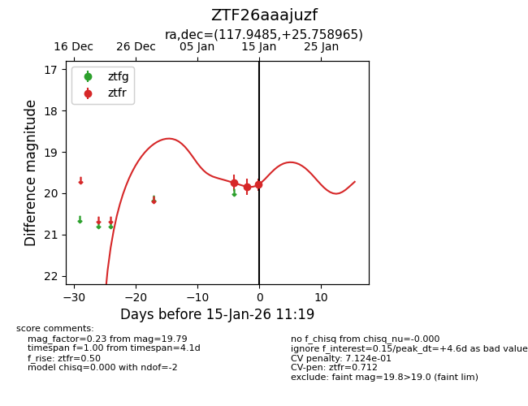
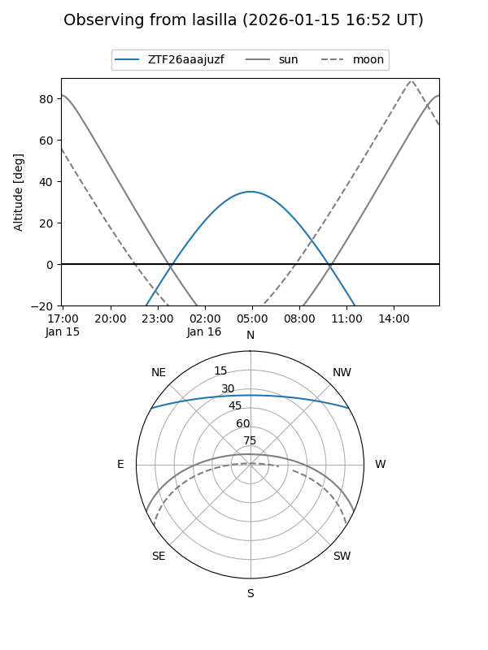
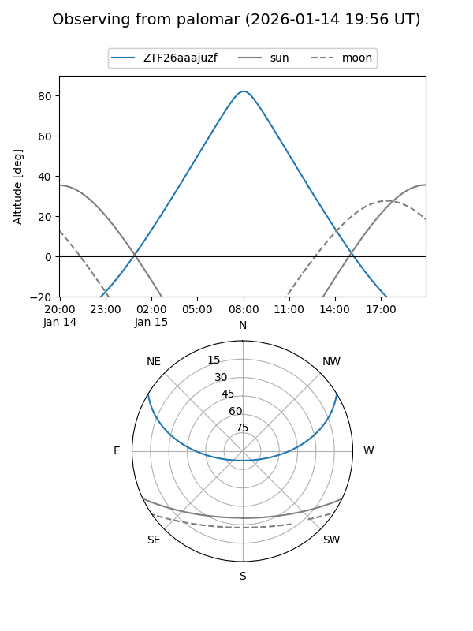

ZTF26aaajuzf
Target ZTF26aaajuzf at 2026-01-15 11:20
Aliases and brokers:
FINK: link
Lasair: link
ALeRCE: link
alt names
ZTF26aaajuzf (ztf,fink_ztf)
Coordinates:
equatorial (ra, dec) = 117.9485,+25.75896
equatorial (HMS+DMS) = 07:51:47.64,+25:45:32.27
galactic (l, b) = (195.0914,+24.00545)
Flags:
likely cv
Photometry:
last ztfr=19.79
3 ztfr detections
Lightcurve

Visibility


Additional plots